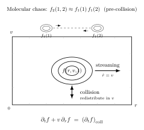

Boltzmann 方程 — Newton 微观如何变成宏观流体?
上一节我们从谐振子计数推出 Debye 模型下的声子比热, 那是平衡态统计力学的最后一站 — 已知系统在平衡里, 问各种热力学量多少. 但现实系统从来不整齐地停在平衡里. 一杯刚倒的热咖啡会凉, 一股风会散, 一摊墨滴在水里会扩开. 从现在起的几节我们转到非平衡 — 这个词其实涵盖了两种非常不同的问题: 一种是系统离平衡不远、被一点外力推着走 (线性响应, Onsager, Kubo), 一种是从微观粒子动力学一路建出宏观流体方程. 后者更基本, 也更难.
今天的问题简单粗暴: 一立方厘米空气, 按标准状态算, 里面有 $N\approx 2.7\times 10^{19}$ 个分子 (Loschmidt 数). 每个分子服从 Newton 方程. 原则上这决定了一切 — 任何宏观现象必然是这 $6N\approx 1.6\times 10^{20}$ 个坐标-动量随时间演化的某种投影. 但没人真的这么算. 我们写 Navier-Stokes 方程, 它只有 $\rho(\mathbf r, t), \mathbf u(\mathbf r, t), T(\mathbf r, t)$ 五个标量场. 从 $10^{20}$ 维降到 5 维, 中间的降维是怎么发生的? 这就是动理论 (kinetic theory) 要回答的问题, 而它的主方程就是 Boltzmann 1872 年写出的那个方程.
一、从 $N$ 体 Newton 到单粒子分布函数
放弃跟踪每个粒子的第一步是引入一个新的主角: 单粒子分布函数 $f(\mathbf r, \mathbf p, t)$. 它的定义是: 时刻 $t$, 在相空间小体积元 $d^3r\,d^3p$ 内的粒子数期望是 $f(\mathbf r, \mathbf p, t)\,d^3r\,d^3p$. 因此
$$ n(\mathbf r, t) = \int f(\mathbf r, \mathbf p, t)\,d^3p, \qquad N = \int f\,d^3r\,d^3p. $$$f$ 不是一个粒子的概率密度, 而是所有粒子在相空间的"密度云". 它是一个 $6+1$ 维函数 — 仍然比 5 维流体场多一维 (动量 $\mathbf p$), 但比 $10^{20}$ 维小得无法比较. 这才是真正合用的中间量.
自由流动的情形. 先假设粒子之间没有相互作用. 每个粒子各走各的 Newton 轨迹: $\dot{\mathbf r}=\mathbf p/m$, $\dot{\mathbf p}=\mathbf F$ (外力). 在相空间里, 这是一组整体的"流". 按 Liouville 定理, 相空间体积元沿流守恒, 所以 $f$ 沿每条轨迹保持不变:
$$ \frac{\partial f}{\partial t} + \frac{\mathbf p}{m}\cdot\nabla_r f + \mathbf F\cdot\nabla_p f \;=\; 0. $$这就是无碰撞的 Liouville 方程 (更精确地说, 对单粒子分布是 Vlasov 方程的骨架). 它纯粹是 Newton 动力学加上粒子数守恒, 没有额外内容.
加上碰撞. 现实空气里, 分子之间有短程相互作用 — 两个分子靠得够近 (几埃之内) 时, 会"撞一下", 交换动量, 然后弹开. 这些碰撞在 $f$ 的视角下做什么? 它们不改变 $f$ 里粒子的位置 (碰撞发生在一个很小的区域, 相对于宏观尺度可以看作瞬间一点), 但改变动量 $\mathbf p$. 因此对给定 $(\mathbf r, \mathbf p)$, 每单位时间有一些粒子被撞走 (离开这个动量值), 也有一些粒子被撞过来 (落到这个动量值). 把碰撞贡献塞进方程右边:
\begin{equation} \frac{\partial f}{\partial t} + \frac{\mathbf p}{m}\cdot\nabla_r f + \mathbf F\cdot\nabla_p f \;=\; \left(\frac{\partial f}{\partial t}\right)_{\!\mathrm{coll}} \label{eq:boltz-skeleton} \end{equation}左边叫"流" (streaming), 右边叫"碰撞积分". 流部分是 Newton 给的、可逆的; 碰撞部分是需要额外模型的. 整个动理论的全部张力都压在怎么写这个 $(\partial f/\partial t)_{\mathrm{coll}}$.

二、严格 deepdive: Stosszahlansatz — 分子混沌假设到底是什么
这是本节要认真推一遍的 cliché 概念. 教科书通常一句"我们假设两粒子是独立的"就过去了, 可是这一步同时做了三件非平凡的事, 每件都值得讲清楚.
(a) 它到底是什么? 严格地说, Boltzmann 的碰撞积分需要的是"两粒子在同一点出现"的联合分布函数 $f_2$. 按照 BBGKY 级列 (Bogoliubov-Born-Green-Kirkwood-Yvon, 把 $N$ 体 Liouville 方程逐级取边缘), $f_1$ 的演化方程右边出现 $f_2$, $f_2$ 的方程右边出现 $f_3$, 如此递推 — 级列是不闭合的. 要截断, 就要给 $f_2$ 一个不依赖 $f_3$ 的表达式. Boltzmann 的闭合方式是
$$ f_2(\mathbf r_1, \mathbf p_1, \mathbf r_2, \mathbf p_2, t) \;\approx\; f_1(\mathbf r_1, \mathbf p_1, t)\,f_1(\mathbf r_2, \mathbf p_2, t), $$即两粒子联合分布因子化为各自单粒子分布之积. 这就是 Stosszahlansatz (直译"碰撞数假设"). 它只在两粒子即将相撞的瞬间 ($\mathbf r_1\approx \mathbf r_2$) 被使用一次, 用来计算碰撞率.
(b) 它哪里来? 为什么合理? 物理图像是: 在一个稀薄气体里, 平均自由程 $\lambda$ 远大于分子尺度 $d$ (气体小参数 $nd^3\ll 1$). 一对即将相撞的分子, 在上一次撞击之后分别经过了 $\sim\lambda$ 的路程才相遇, 这段路上它们各自又与另外一些别的分子有不同的碰撞历史, 彼此的关联早已在背景中稀释掉了. 因此在它们 即将 碰撞那一刻, 两粒子的动量可以合理地当作独立抽样, $f_2\approx f_1 f_1$.
这一论证严格地只在稀薄气体的短程碰撞下成立: (i) 作用力必须是短程的, 这样"碰撞"是瞬间事件, 之外粒子自由; (ii) 密度必须小到 $nd^3\ll 1$, 保证两次碰撞间粒子有充分时间"失忆"; (iii) 三体以上同时碰撞可以忽略. 对稠密流体、长程 Coulomb 相互作用、或强关联体系, Stosszahlansatz 不再合法, 需要更复杂的闭合 (Bogoliubov, Landau).
1975 年 Lanford 证明了在硬球气体、Boltzmann-Grad 极限 ($N\to\infty, d\to 0, Nd^2\to$ const) 下, 在一段短的时间 (大约一个平均自由时间的量级) 内, BBGKY 级列的解严格收敛到 Boltzmann 方程解. 这是目前分子混沌假设最干净的数学合法性证明 — 它不是永远对, 只在极限和短时间内对.
(c) 它的代价是什么? 这里时间箭头偷偷进入. 这是最微妙的一步, 也是本节最需要讲清楚的. 注意上面的表述: "碰撞前 两粒子独立". 为什么不是"碰撞后 两粒子独立"?
因为 Newton 力学对时间反演对称, 两粒子经过一次弹性碰撞后, 出射动量由出射角 (散射截面) 决定, 两者的动量被碰撞关联起来了. 严格一点: 碰撞后的两粒子联合分布 不是 $f_1 f_1$ 的乘积 — 它包含通过碰撞产生的动量-动量关联 (比如两粒子的总动量被锁定守恒). 因此 Stosszahlansatz 用在"碰撞前"是合理的 (两粒子是独立采样的), 用在"碰撞后"就等于主动抛弃了这些关联.
这个"抛弃关联"的动作, 就是 Boltzmann 方程获得 不可逆性 的根源. 你在每次碰撞都规定"输入态独立, 输出态也立刻忘记关联", 这在事件时间轴上只能往一个方向走 — 你不能把时间反转过来, 因为反转后你需要的是"碰撞后独立", 而碰撞后本不独立. Boltzmann 方程在微观时间反演下 不 对称, 即使 Newton 方程对称. 这一不对称完全来自 Stosszahlansatz, 不来自 Newton 动力学本身.
这解释了下一节 $H$ 定理为何可能: $H$ 会单调减小, 是因为 Stosszahlansatz 每用一次就隐含选择了一个时间方向. 物理上, 这个选择对应于"输入是无关联的自由分子, 输出是经过碰撞的、关联藏入系统中不可跟踪自由度里的分子" — 不可跟踪自由度就是 $f_2, f_3, \ldots$ 中 $f_1 f_1$ 乘积之外的所有残差, 它们被丢进"热库"里. 因此分子混沌假设扮演了统计力学中从微观到宏观的那个 不可逆性的唯一入口. Loschmidt 1876 年就质疑过 Boltzmann: Newton 可逆, 为何结论是不可逆的? 答案就在这一步.
三、碰撞积分的形式、取矩与流体方程的浮现
有了分子混沌假设, 就可以写出具体的碰撞积分. 考虑两粒子从动量 $(\mathbf p_1, \mathbf p_2)$ 被撞到 $(\mathbf p_1', \mathbf p_2')$. 单位时间、单位体积内该种碰撞事件数与两个入射粒子密度乘积 $f_1 f_2$、相对速度 $|\mathbf v_1 - \mathbf v_2|$、微分散射截面 $\sigma(\Omega)$ 成正比. 反过程 $(\mathbf p_1', \mathbf p_2')\to(\mathbf p_1, \mathbf p_2)$ 贡献 $f_1' f_2'$. 净得失 (写 $f_1\equiv f(\mathbf r, \mathbf p_1, t)$ 等):
\begin{equation} \left(\frac{\partial f}{\partial t}\right)_{\!\mathrm{coll}} \;=\; \int d^3 p_2\int d\Omega\;|\mathbf v_1-\mathbf v_2|\;\sigma(\Omega)\;\bigl[f_1' f_2' - f_1 f_2\bigr] \label{eq:coll-int} \end{equation}这是 Boltzmann 碰撞积分 的标准形式. 注意它是非线性的 ($f$ 的二次方), 这使 Boltzmann 方程成为一个非线性积分-微分方程, 一般无解析解. 三个关键结构值得记住:
- 碰撞守恒律. 每次弹性碰撞都保质量、动量、能量. 因此对任意 $\chi(\mathbf p)\in\{1, \mathbf p, p^2/(2m)\}$ 取 $\int \chi\,(\partial f/\partial t)_\mathrm{coll}\,d^3 p$ 都是零 — 这叫"碰撞不变量".
- 平衡解. 若 $f_1 f_2 = f_1' f_2'$ 对所有碰撞成立, 则 $(\partial f/\partial t)_\mathrm{coll}\equiv 0$, 系统处于局部平衡. 取对数 $\log f$ 必须是碰撞不变量的线性组合, 立刻得出 $\log f = \alpha + \beta\cdot\mathbf p + \gamma p^2$, 即 $f \propto \exp[-\beta(\mathbf p-m\mathbf u)^2/(2m)]$, 这就是 Maxwell-Boltzmann 分布. 平衡不是额外假设, 它是碰撞积分的 zero.
- $H$ 定理入口. 可证明 $\int\log f\,(\partial f/\partial t)_\mathrm{coll} d^3 p \le 0$, 下一节专门讨论.
取矩: 微观到流体方程. 把 Boltzmann 方程两边乘上 $\chi(\mathbf p)$ 然后对 $\mathbf p$ 积分. 由于碰撞积分对任何碰撞不变量的积分为零, 右边直接没了:
$$ \int \chi\,\frac{\partial f}{\partial t}\,d^3 p + \int \chi\,\frac{\mathbf p}{m}\cdot\nabla_r f\,d^3 p + \int \chi\,\mathbf F\cdot\nabla_p f\,d^3 p \;=\; 0. $$取 $\chi=m$ 得质量守恒 $\partial_t\rho + \nabla\cdot(\rho\mathbf u)=0$; 取 $\chi=\mathbf p$ 得动量守恒 $\partial_t(\rho\mathbf u) + \nabla\cdot\Pi = \rho\mathbf F/m$, 其中 $\Pi$ 是应力张量; 取 $\chi=p^2/2m$ 得能量守恒. 这三条守恒律的一般结构是 任何 合理碰撞模型都给出的 — 这就是为什么流体方程几乎与微观细节无关.
要关闭方程组, 还要知道 $\Pi$ 和热流 $\mathbf q$ 怎么依赖于 $(\rho, \mathbf u, T)$. 这一步叫 Chapman-Enskog 展开 (Chapman 1916, Enskog 1917): 以 Knudsen 数 $\mathrm{Kn}=\lambda/L$ 为小参量, 把 $f$ 按局部 Maxwellian 加微扰展开. 零阶给出 Euler 方程 (无耗散、无粘性); 一阶微扰给出 Navier-Stokes, 并且把粘度、热导、扩散系数全部表达为碰撞截面的积分. 这一整套推导把 Newton 与 Navier-Stokes 的距离彻底填平.
四、数字、极限、与历史
平均自由程与粘度都是动理论最直接的预言, 可以马上代入大气参数.
平均自由程. 一粒气体分子在单位时间内扫过体积 $\sigma \bar v$ (其中 $\sigma$ 是碰撞截面, $\bar v$ 是平均速率), 若其他分子密度是 $n$, 碰撞频率为 $\nu = n\sigma\bar v$, 平均自由程
$$ \lambda \;\sim\; \frac{1}{n\sigma}. $$标准大气 (1 atm, 300 K): $n = p/(k_B T) = 10^5 / (1.38\times 10^{-23} \times 300) \approx 2.4\times 10^{25}\,\mathrm{m^{-3}}$. 分子有效直径 $d\approx 3.7\,\mathrm{\AA}$, 故 $\sigma\approx \pi d^2\approx 4.3\times 10^{-19}\,\mathrm{m^2}$. 代入得
$$ \lambda \;\approx\; \frac{1}{(2.4\times 10^{25})(4.3\times 10^{-19})} \;\approx\; 9.7\times 10^{-8}\,\mathrm{m} \;\approx\; 100\,\mathrm{nm}. $$乘上 $\sqrt 2$ 因子修正 (两个分子都在运动), 正确值约 $70\,\mathrm{nm}$. 这个数字有深远含义: 宏观器件 $L\sim 1\,\mathrm{mm}$, Knudsen 数 $\mathrm{Kn}=\lambda/L\sim 10^{-4}$, 碰撞极大主导 → 流体力学适用; 但若我们关心 MEMS 或 100 nm 尺度, $\mathrm{Kn}\sim 1$, Navier-Stokes 开始失效, 必须直接用 Boltzmann 方程.
粘度. 动理论给出 $\eta \sim \tfrac{1}{3} n m \bar v \lambda$, 即动量通过碰撞随机游走的扩散系数. $\bar v \approx \sqrt{8 k_B T/(\pi m)}$, 对氮气 ($m\approx 4.7\times 10^{-26}\,\mathrm{kg}$) 代入 $T=300\,\mathrm{K}$ 得 $\bar v\approx 470\,\mathrm{m/s}$. 然后
$$ \eta \;\sim\; \tfrac{1}{3}(2.4\times 10^{25})(4.7\times 10^{-26})(470)(7\times 10^{-8}) \;\approx\; 1.2\times 10^{-5}\,\mathrm{Pa\,s}. $$实测 $\eta_\text{air}(300\,\mathrm K)\approx 1.85\times 10^{-5}\,\mathrm{Pa\,s}$, 与估算差 1.5 倍. 对于一个用 Stosszahlansatz + 硬球散射截面作出的一行估算, 这种精度已经震撼 — Boltzmann 不但告诉你粘度怎么来的, 还告诉你它的量级.
更惊人的是 $\eta$ 与 $n$ 无关: 因为 $\lambda\propto 1/n$, 所以 $n\lambda$ 与 $n$ 无关. 1860 年 Maxwell 从早期动理论推出这一结论后自己都不信, 亲自做实验验证了 (他的妻子在家中用玻璃管测了空气在不同气压下的阻尼). 这是动理论第一次"非平凡的预言能实验验证"的里程碑.
极限 I: 碰撞主导 ($\mathrm{Kn}\to 0$). 碰撞频率远大于流体宏观变化率, $f$ 几乎处处是局部 Maxwellian, Chapman-Enskog 收敛快, Navier-Stokes 成立. 这是日常空气、水流、烟的状态.
极限 II: 无碰撞 ($\mathrm{Kn}\to\infty$). 碰撞积分可忽略, Boltzmann 方程退化为 Vlasov 方程 (长程 Coulomb 力下, 碰撞项被"平均场"代替):
$$ \frac{\partial f}{\partial t} + \mathbf v\cdot\nabla_r f + \frac{q}{m}(\mathbf E + \mathbf v\times\mathbf B)\cdot\nabla_p f = 0. $$这是等离子体物理的基本方程, 描述太阳风、星际气体、tokamak 等离子体 — 没有局部平衡, 粒子"记得"远处的场. Vlasov 方程时间反演对称, 不给 $H$ 定理 — 因为我们把 Stosszahlansatz 扔掉了.
历史线. Maxwell 1860 用运动学导出速度分布和粘度; Boltzmann 1872 发表 "Weitere Studien über das Wärmegleichgewicht unter Gasmolekülen", 其中既给出了方程 (\ref{eq:boltz-skeleton})-(\ref{eq:coll-int}), 也给出了 $H$ 定理, 奠定整个动理论; Loschmidt 1876 用时间反演悖论质疑不可逆性; Zermelo 1896 用 Poincaré 回归定理再次攻击; Boltzmann 在两次"可逆性悖论" 辩护中逐渐澄清 Stosszahlansatz 的角色. 1900 年 Hilbert 在巴黎数学家大会上把"对气体动理论公理化"列为第六问题的核心之一, 1912-1917 年间 Hilbert, Chapman, Enskog 给出从 Boltzmann 方程渐近推出 Navier-Stokes 的严格展开, 真正闭合了 Newton → 流体力学的桥梁. 1956 年 Bogoliubov 给出 BBGKY 级列的系统展开, 1975 年 Lanford 证明了 Boltzmann 方程在 Boltzmann-Grad 极限下的严格导出 (短时间). 分子混沌假设至今仍是可以讨论的开放问题, 尤其在稠密流体和量子气体里.
小结
Boltzmann 方程是从 Newton 微观到 Navier-Stokes 宏观的唯一严格桥梁. 它放弃了跟踪 $10^{23}$ 个粒子的幻想, 改为跟踪一个单粒子相空间密度 $f$; 左边的流是 Newton 给的, 右边的碰撞积分需要 分子混沌假设 才能闭合, 而这一假设并非无代价 — 它偷偷引入了一个时间箭头, 即碰撞前独立、碰撞后不再独立的不对称性. 这一步把微观的时间反演对称性破掉, 让 $H$ 定理、耗散、熵增在后续几节能自然浮现. 取矩后质量、动量、能量守恒直接给出流体方程, Chapman-Enskog 一阶微扰给出粘度、热导的显式公式, 与大气实测 1.5 倍以内吻合. 下一节我们把 $H$ 定理彻底推一遍, 看 Boltzmann 如何定义一个能单调减小的函数, 以及 Loschmidt 和 Zermelo 悖论如何在 Stosszahlansatz 的意义下被化解 — 那是熵增定律从统计力学内部真正被"证明"的一刻.
▲